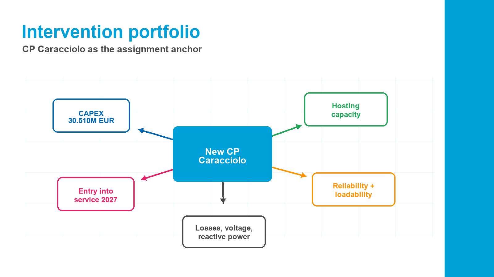

schede-intervento.pdf
Intervention portfolioPortafoglio interventi
A structured view of the A2A/Unareti network-development sheets, designed to help select assumptions, compare investments, and anchor the CP Caracciolo business case. Una vista strutturata delle schede di sviluppo rete A2A/Unareti, pensata per selezionare ipotesi, confrontare investimenti e ancorare il business case CP Caracciolo.

Role in the CBA
What this document contributesCosa apporta questo documento
These sheets provide the engineering facts. They do not replace the benefit methodology, but they give the physical project scope and the economic input base. Queste schede forniscono i dati tecnici. Non sostituiscono la metodologia dei benefici, ma danno il perimetro fisico del progetto e la base degli input economici.
CAPEX
OPEX
Timing
Primary substations
Reactive power
Asset renewal
Assignment focus
CP Caracciolo - English working translationCP Caracciolo - scheda originale
Only CP Caracciolo is translated in full detail here because it is the project used in the assignment business case. Scheda intervento "Nuova CP Caracciolo", identificativo UNR-PdS2023-003, anno di pianificazione 2021, area geografica Milano.
IdentificationIdentificazione
Intervention name: New CP Caracciolo. Intervention ID: UNR-PdS2023-003. Planning year: 2021. Geographic area: Milan.
Nome intervento: Nuova CP Caracciolo. Identificativo: UNR-PdS2023-003. Anno di pianificazione: 2021. Area geografica: Milano.
Technical descriptionDescrizione tecnica
Construction of a new primary substation to increase capacity. The substation connects to the national transmission grid at 220 kV through double-busbar GIS equipment insulated in SF6. It includes three 63 MVA HV/MV transformers with ONAN cooling, 36 medium-voltage line bays, three neutral-forming transformers, three Petersen coils, and works to connect the substation to the existing network.
Costruzione di una nuova cabina primaria per aumentare la capacità. Connessione alla RTN a 220 kV tramite blindato a doppia sbarra isolato in SF6, tre trasformatori AT/MT da 63 MVA con raffreddamento ONAN, 36 stalli linea MT, tre trasformatori formatori di neutro, tre bobine di Petersen e interventi di connessione alla rete esistente.
Main objectivesFinalità principali
The intervention supports hosting capacity, resilience, technical quality, plant adequacy, environmental impact and safety, loadability, voltage control, reactive-energy management, digitalization, telecommunication systems, and technological innovation.
L'intervento supporta hosting capacity, resilienza, qualità tecnica, adeguamento impianti, impatto ambientale e sicurezza, loadability, controllo tensione, gestione energia reattiva, digitalizzazione, sistemi di telecomunicazione e innovazione tecnologica.
Timing and investment summaryTempistiche e sintesi investimento
Works are expected to start in 2026, with entry into service in 2027. Reported total CAPEX is 30.510 million euros. Reported OPEX is 1.041 EUR/MVA.
Avvio lavori previsto nel 2026 ed entrata in esercizio nel 2027. CAPEX totale riportato: 30,510 milioni di euro. OPEX riportato: 1,041 EUR/MVA.
How to use this in the CBAUso nell'ACB
For the cost-benefit model, this sheet is the source for project scope, commissioning year, initial investment, operating-cost assumption, and qualitative drivers. It does not itself monetize benefits; the monetization should be linked to ARERA benefit categories such as reduction of withdrawal saturation, reduction of network losses, reliability improvement, avoided emergency actions, and flexibility/resilience improvements where data supports them.
Nel modello ACB, questa scheda è la fonte per perimetro del progetto, anno di entrata in esercizio, investimento iniziale, ipotesi OPEX e driver qualitativi. Non monetizza direttamente i benefici; la monetizzazione va collegata alle categorie ARERA, ad esempio riduzione della saturazione dei prelievi, riduzione delle perdite, miglioramento affidabilità, azioni di emergenza evitate e benefici di flessibilità/resilienza dove supportati dai dati.
Catalogue
Search and filter interventionsCerca e filtra interventi
UNR-PdS2023-003
MilanoNuova CP Caracciolo
New primary substation for capacity increase, connected to the 220 kV transmission grid with double-busbar GIS in SF6, 3 AT/MT transformers of 63 MVA, 36 MV line bays, neutral-forming transformers, Petersen coils, and network connections.
Nuova cabina primaria per aumento capacità, con connessione RTN 220 kV, blindato doppia sbarra in SF6, 3 trasformatori AT/MT da 63 MVA, 36 stalli linea MT, trasformatori formatori di neutro, bobine di Petersen e connessioni alla rete esistente.
30.510 kEURCAPEX
1.041 EUR/MVAOPEX
2026 -> 2027Works -> serviceLavori -> esercizio
Assignment anchorBP13BA10/BP10Reliability
UNR-PdS2023-004
MilanoNuova CP Comasina
New 220 kV-connected primary substation with 3 AT/MT transformers of 63 MVA, 38 MV line bays, neutral compensation, and related network connection works.
Nuova cabina primaria con connessione 220 kV, 3 trasformatori AT/MT da 63 MVA, 38 stalli linea MT, compensazione del neutro e interventi di connessione alla rete.
35.080 kEURCAPEX
1.041 EUR/MVAOPEX
2022 -> 2025Timing
CapacityLoadabilityNetwork meshing
UNR-PdS2023-008
MilanoGestione energia reattiva MI
Installation of three STATCOM compensators in three primary substations identified with the TSO to compensate reactive energy for Unareti primary substations in Milan.
Installazione di tre compensatori STATCOM in tre cabine primarie individuate con il TSO per compensare l'energia reattiva delle CP Unareti nel Comune di Milano.
15.780 kEURCAPEX
TBDOPEX
2024 -> 2026Timing
Voltage controlReactive powerSystem operation
UNR-PdS2023-011
MilanoNuova CP Mugello
New 220 kV primary substation for capacity increase, with 3 AT/MT transformers of 63 MVA, 38 MV line bays, neutral compensation, and network connection works.
Nuova cabina primaria 220 kV per aumento capacità, con 3 trasformatori AT/MT da 63 MVA, 38 stalli linea MT, compensazione del neutro e connessioni alla rete.
26.360 kEURCAPEX
1.041 EUR/MVAOPEX
2022 -> 2025Timing
CapacityLoadabilityLosses
UNR-PdS2023-023
MilanoRinnovo CP Volta
Renewal and expansion of the 23 kV MV section, renewal of HV protections, and building works.
Rifacimento e ampliamento della sezione MT 23 kV, rinnovo delle protezioni AT e interventi sul fabbricato.
11.430 kEURCAPEX
100 EUR/stallo MTOPEX
2025 -> 2027Timing
Asset renewalTechnical qualitySafety
UNR-PdS2023-024
MilanoNuova CP Sarca
New 220 kV primary substation with 3 AT/MT transformers of 63 MVA, 38 MV line bays, neutral-forming transformers, Petersen coils, and network connections.
Nuova cabina primaria 220 kV con 3 trasformatori AT/MT da 63 MVA, 38 stalli linea MT, trasformatori formatori di neutro, bobine di Petersen e connessioni alla rete.
35.730 kEURCAPEX
1.041 EUR/MVAOPEX
2025 -> 2027Timing
CapacityResilienceBP13
UNR-PdS2023-025
MilanoNuova CP Baggio
New 220 kV primary substation for future capacity needs, with 3 AT/MT transformers of 63 MVA, 38 MV line bays, neutral compensation, and network connection works.
Nuova cabina primaria 220 kV per fabbisogni futuri di capacità, con 3 trasformatori AT/MT da 63 MVA, 38 stalli linea MT, compensazione del neutro e connessioni alla rete.
4.950 kEURCAPEX
1.041 EUR/MVAOPEX
2029 -> 2031Timing
Future growthElectrificationSensitivity
UNR-PdS2023-026
MilanoNuova CP MIND
New 220 kV GIS primary substation with 3 AT/MT transformers of 63 MVA, neutral transformers, Petersen coils, and connection works.
Nuova cabina primaria 220 kV in blindato GIS con 3 trasformatori AT/MT da 63 MVA, trasformatori di neutro, bobine di Petersen e connessioni alla rete.
23.100 kEURCAPEX
1.041 EUR/MVAOPEX
2025 -> 2027Timing
Urban developmentCapacityFlexibility
UNR-PdS2023-027
MilanoNuova CP MICO
New 220 kV GIS primary substation with 3 AT/MT transformers of 63 MVA, neutral transformers, Petersen coils, and connection works.
Nuova cabina primaria 220 kV in blindato GIS con 3 trasformatori AT/MT da 63 MVA, trasformatori di neutro, bobine di Petersen e connessioni alla rete.
47.930 kEURCAPEX
1.041 EUR/MVAOPEX
2024 -> 2026Timing
Largest CAPEXCapacityResilience
UNR-PdS2023-034
BresciaNuova CP Violino
New 132 kV hybrid primary substation with 2 AT/MT transformers of 40 MVA, 22 MV line bays, and connection works.
Nuova cabina primaria 132 kV di tipo ibrido, con 2 trasformatori AT/MT da 40 MVA, 22 stalli linea MT e connessioni alla rete.
13.630 kEURCAPEX
1.041 EUR/MVAOPEX
2023 -> 2024Timing
CapacityBresciaEarlier service
UNR-PdS2023-038
BresciaNuova CP Bione
New primary substation for capacity increase, stronger meshing of the existing network, and connection works.
Nuova cabina primaria per aumento capacità, maggiore magliatura della rete esistente e interventi di connessione.
1.170 kEURCAPEX
1.041 EUR/MVAOPEX
2029 -> 2030Timing
MeshingFuture growthLow CAPEX
UNR-PdS2023-039
BresciaNuova CP Chiesanuova
New primary substation for capacity increase and connection to the existing network.
Nuova cabina primaria per aumento capacità e interventi di connessione alla rete esistente.
3.650 kEURCAPEX
1.041 EUR/MVAOPEX
2029 -> 2030Timing
CapacityGrowth optionBrescia
UNR-PdS2023-043
BresciaRinnovo CP Nozza
Renewal of the 15 kV MV section, HV protection renewal, and building works.
Rifacimento della sezione MT 15 kV, rinnovo protezioni AT e interventi sul fabbricato.
5.970 kEURCAPEX
100 EUR/stallo MTOPEX
2025 -> 2027Timing
Asset renewalQualitySafety
UNR-PdS2023-045
BresciaRinnovo CP Bagolino
Renewal of the MV section, HV protections, transformer replacement, Petersen coil installation, and building works.
Rifacimento sezione MT, rinnovo protezioni AT, cambio trasformatori, installazione bobine di Petersen e interventi sul fabbricato.
9.100 kEURCAPEX
1.041 EUR/MVAOPEX
2026 -> 2027Timing
Asset renewalNeutral compensationReliability
UNR-PdS2023-049
BresciaNuova CP Tremosine
New 220 kV hybrid primary substation with 2 AT/MT transformers of 25 MVA, 12 MV line bays, Petersen coils, and connection works.
Nuova cabina primaria 220 kV di tipo ibrido, con 2 trasformatori AT/MT da 25 MVA, 12 stalli linea MT, bobine di Petersen e connessioni alla rete.
21.560 kEURCAPEX
1.041 EUR/MVAOPEX
2024 -> 2025Timing
CapacityMountain/resilience angleLosses
UNR-PdS2025-011
MilanoRinnovo CP Venezia - Sezione MT
Renewal and expansion of the 23 kV MV section of the substation, plus building works.
Rifacimento e ampliamento della sezione MT 23 kV della cabina, con interventi sul fabbricato.
5.810 kEURCAPEX
100 EUR/stallo MTOPEX
2025 -> 2027Timing
Asset renewalMV sectionQuality